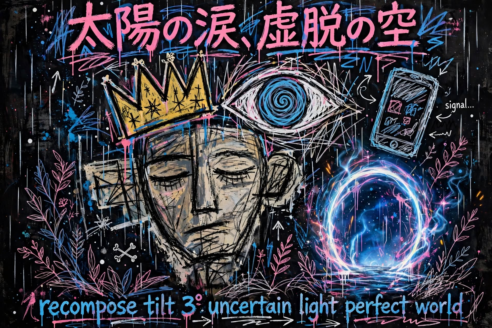

太陽の涙、虚脱の空
スマホ
タブレット

読み込み中…
シェアする
Instagram
Threads
Bluesky
X
今は Instagram 用です
📋 テキストをコピー
🖼️ 画像を保存
✨ 詩入り画像を作る
💾 詩入り画像を保存
📱 詩入り画像でシェア
Instagramは、この画像をそのまま投稿できます。詩が画像に入っているので、キャプションは短くてOKです。
📱 スマホのシェアで送る
閉じる
天気を取得中…
ライブ静止画 ・ 30分おきに更新
ライブ静止画を取得中…
AIがライブ画像から自動生成した詩です。上の温墨イラストはトップのままです。
↗ シェアする
今開いている画面の詩と画像をシェアします
虚脱の空
太陽の涙
からっと
ほどよく
こいめ
仙人級